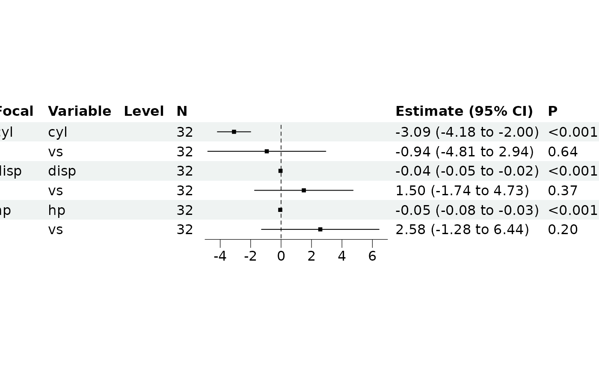

![[Stable]](figures/lifecycle-stable.svg)
This function takes regression results and formats them into a forest plot display. It handles:
Formatting of estimates, CIs and p-values
Automatic x-axis limits calculation
Cleaning of redundant group/focal variable labels
Custom subsetting and column dropping The function uses
forestploter::forest()internally for the actual plotting.
Usage
br_show_forest(
breg,
clean = TRUE,
rm_controls = FALSE,
...,
subset = NULL,
drop = NULL,
tab_headers = NULL
)Arguments
- breg
A regression object with results (must pass
assert_breg_obj_with_results()).- clean
Logical indicating whether to clean/condense redundant group/focal variable labels. If
TRUE, remove "Group" or "Focal" variable column when the values in the result table are same (before performingsubsetanddrop), and reduce repeat values in column "Group", "Focal", and "Variable".- rm_controls
If
TRUE, remove control terms.- ...
Additional arguments passed to
forestploter::forest(), runvignette("forestploter-post", "forestploter")to see more plot options.- subset
Expression for subsetting the results data (
br_get_results(breg)).- drop
Column indices to drop from the display table.
- tab_headers
Character vector of custom column headers (must match number of displayed columns).
See also
Other br_show:
br_show_fitted_line(),
br_show_fitted_line_2d(),
br_show_forest_ggstats(),
br_show_forest_ggstatsplot(),
br_show_risk_network(),
br_show_table(),
br_show_table_gt()
Examples
m <- br_pipeline(mtcars,
y = "mpg",
x = colnames(mtcars)[2:4],
x2 = "vs",
method = "gaussian"
)
br_show_forest(m)

br_show_forest(m, clean = TRUE, drop = 3)
br_show_forest(m, clean = FALSE)